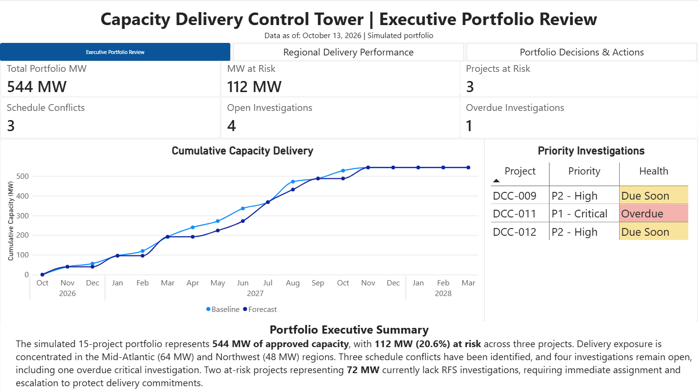
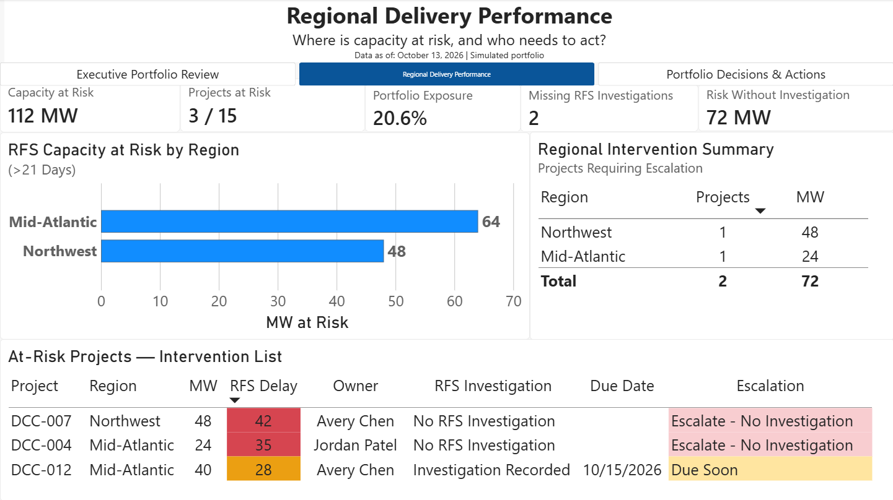
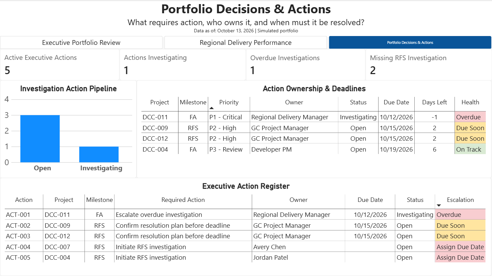
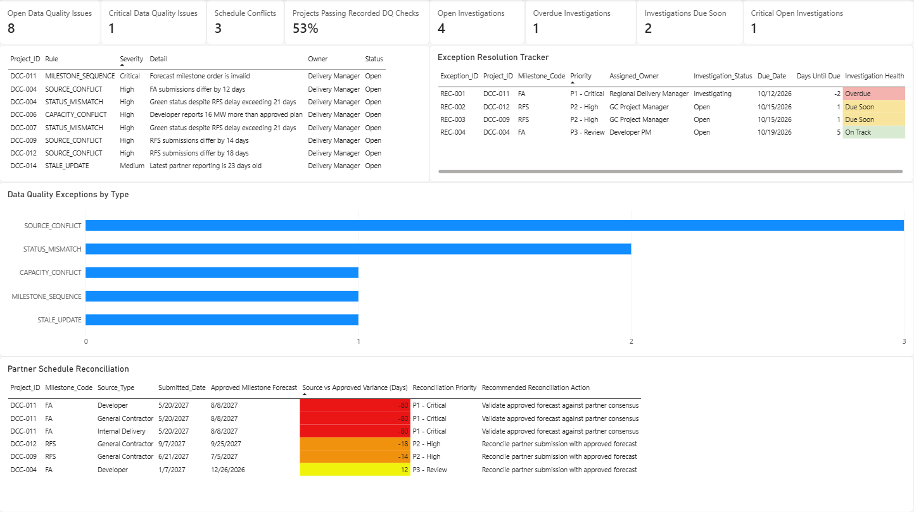
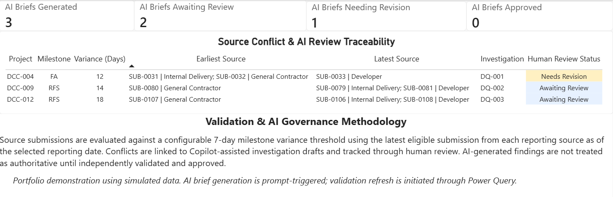
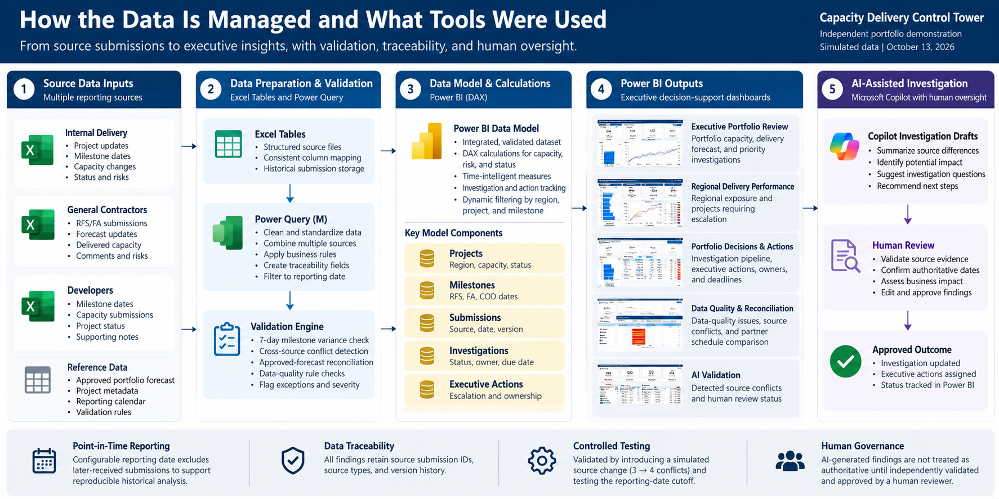

From Delivery Updates to Executive Decisions
The control tower consolidates a simulated 15-project, 544 MW data-center delivery portfolio into a unified view of capacity commitments, schedule exposure, and priority investigations.

Where Delivery Exposure Is Concentrated
Regional reporting translates milestone delays into capacity exposure and identifies projects requiring escalation.

Turning Risk Into Accountable Action
An executive action register links required interventions to project owners, deadlines, investigation status, and escalation needs.

Establishing Confidence in Delivery Data
The reporting framework identifies inconsistencies across milestone forecasts, project status, capacity submissions, and reporting freshness.

Cross-source validation
Compares the milestone dates reported by internal delivery, general contractors, and developers.
Approved-forecast reconciliation
Separately compares submitted milestone dates against approved portfolio forecasts.
Evidence-Backed AI With Human Oversight
Power Query evaluates 45 project/milestone combinations using a configurable seven-day threshold. Conflicts are linked to Copilot-assisted investigation drafts and human-review decisions.

How the Data Is Managed and What Tools Were Used
The Capacity Delivery Control Tower integrates structured Excel source submissions, Power Query validation rules, Power BI portfolio reporting, and Microsoft Copilot-assisted investigation drafting within a human-governed workflow.

How the Control System Works
Structured source data, configurable Power Query rules, Power BI reporting, and Copilot-assisted investigation drafting form an evidence-backed workflow.
Technical components
Power BI DAX Excel Tables Power Query / M Microsoft Copilot Point-in-time reportingControlled tests
Dynamic detection: A simulated source change increased conflicts from three to four; restoration returned the count to three.
Historical cutoff: A later-received submission was excluded from the October 13 snapshot and included when the cutoff advanced to October 21.
Implementation boundary: Validation is refresh-driven, Copilot drafts are prompt-triggered, and the project is a simulation rather than a production deployment. Reproducible historical reporting depends on preserving submission history.